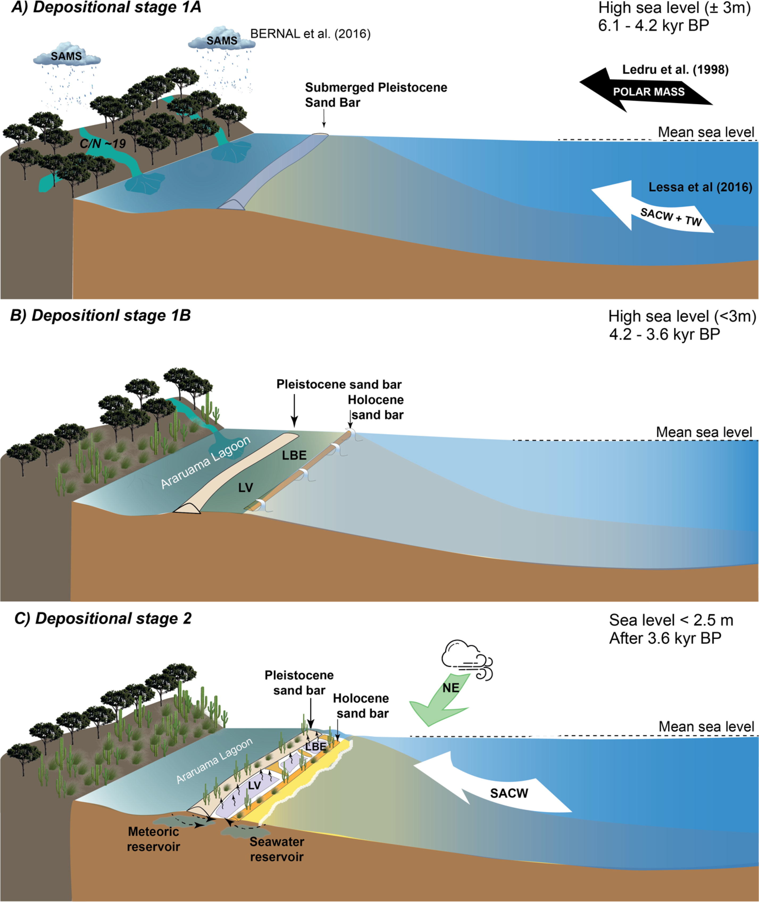

Organic matter diagenesis and precipitation of Mg-rich carbonate and dolomite in modern hypersaline lagoons linked to climate changes

Resumo em Português
Biomarcadores lipídicos têm sido utilizados para reconstruir mudanças ambientais em sistemas lacustres em diferentes escalas de tempo. Os sedimentos lacustres são excelentes arquivos para a aplicação dessas ferramentas, devido à sua resposta rápida e amplificada às pressões ambientais. Nas últimas três décadas, as lagoas hipersalinas da planície costeira do Rio de Janeiro têm sido estudadas como laboratórios naturais para a observação dos processos biogeoquímicos envolvidos na precipitação moderna de dolomita. Neste trabalho, é aplicada uma abordagem multiproxy para caracterizar dois estágios deposicionais durante o Holoceno que podem ter desencadeado a formação primária de dolomita nesses ambientes lagunares. Um primeiro estágio, com dois subestágios (1A: 6,1–4,2 ka AP; 1B: 4,2–~3,6 ka AP), foi depositado durante a subida do nível do mar, com sedimentos contendo abundância de n-alcanos de cadeia longa com assinaturas δ²H depletas em ²H (δ²Hn-alc), indicando aportes fluviais de carbono orgânico terrestre durante condições predominantemente úmidas. Um segundo estágio (<~3,6 ka AP), compreendendo fácies lacustres, foi caracterizado por elevadas quantidades de precipitados carbonáticos autigênicos (calcita, Mg-calcita, Ca-dolomita e dolomita). Os carbonatos resultam de mudanças físico-químicas na água após o isolamento das lagoas tanto do Oceano Atlântico quanto da vizinha Lagoa de Araruama, devido a uma queda no nível do mar e à aridificação associada à intensificação da ressurgência costeira após 2,2 ka AP. Os resultados demonstram claramente uma influência climática na formação de dolomita em ambientes costeiros hipersalinos, vinculada a mudanças no nível do mar e a fenômenos de ressurgência costeira. Com base nessas observações, hipotetiza-se que a existência de condições paleoceanográficas e ambientais similares no passado geológico pode ter desencadeado a formação de extensos depósitos de dolomita microbiana, fornecendo novos elementos para interpretar a formação de depósitos maciços de dolomita no registro geológico, como por exemplo ao longo da margem Triássica Superior do Tétis.